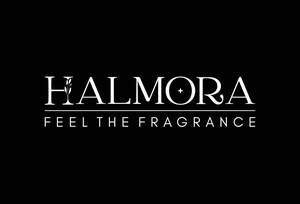

Trade Mark Journal No.2025/044 31 October 2025
UK00004281647 21 October 2025 (3,4,11,21)

- Class 3
- Incense; Agarwood [incense]; Incense sachets; Incense sticks; Incense cones; Incense spray; Fumigating incenses (Kunko); Dhoop; Perfumed potpourris; Aromatics for perfumes; Scented wood; Fragrant sachets; Aromatic potpourris; Joss sticks; Fragrance emitting wicks for room fragrance; Scented sachets; Potpourris [fragrances]; Perfumed sachets; Amber [perfume]; Oils for perfumes and scents; Scented ceramic stones; Pomanders [aromatic substances]; Scented oils; Perfumes; Scented linen sprays; Cushions impregnated with fragrant substances; Fragrance sachets; Perfuming sachets; Scented water for fragrancing; Sachets for perfuming linen; Linen (Sachets for perfuming -); Perfumed powders; Potpourri sachets for incorporating in aromatherapy pillows; Aromatics for fragrances; Perfume; Air fragrance reed diffusers; Musk [perfumery]; Potpourri; Cedarwood perfumery; Perfume oils; Scented pine cones; Cushions impregnated with perfumed substances; Fragrance sachets for eye pillows; Perfumes for ceramics; Perfumes for cardboard; Fragrance refills for non-electric room fragrance dispensers; Perfumed powder; Extracts of flowers [perfumes]; Flowers (Extracts of -) [perfumes]; Extracts of flowers being perfumes; Scented room sprays; Liquid perfumes; Aromatherapy lotions; Ethereal oils for fragrancing; Cushions filled with fragrant substances; Peppermint oil [perfumery]; Potpourris.
- Class 4
- Musk scented candles; Perfumed candles; Candles (Perfumed -); Scented candles; Aromatherapy fragrance candles; Votive candles; Fragranced candles; Candles; Candles and wicks for candles for lighting; Candle torches; Wicks for candles; Candles for absorbing smoke; Tallow candles; Soy candles; Beeswax for use in the manufacture of candles; Tealight candles; Wicks for candles for lighting; Candles and wicks for lighting; Fruit candles; Tea light candles; Candle wax; Bougies in the nature of wax candles; Beeswax for use in the manufacture of ointments; Candles for lighting; Floating candles; Church candles; Wicks for oil lamps; Nightlights [candles]; Candles for use as nightlights; Candles in tins; Wax for making candles; Grave candles, non-electric.
- Class 11
- Scented electric candles; Flameless candles; Candle lamps; Candle lanterns; Electronic candles; Candle lighters; Electric candles; Braziers.
- Class 21
- Incense burners; Incense pots; Incense burners [domestic]; Incense stick holders; Candle snuffers; Censers; Perfume burners; Burners (Perfume -); Perfume vaporizers; Candle sticks; Fragrant oil burners; Perfume burners [other than electric]; Vaporizers for perfume [empty]; Aromatic oil diffusers, other than reed diffusers; Candle snuffers, not of precious metal; Oil burners (aromatherapy); Candle extinguishers; Aromatic oil diffusers, other than reed diffusers, electric and non-electric; Ritual flower vases; Candle extinguishers of precious metal; Vaporizers for perfume sold empty; Perfume burners, electric and non-electric.
Halmora Ltd